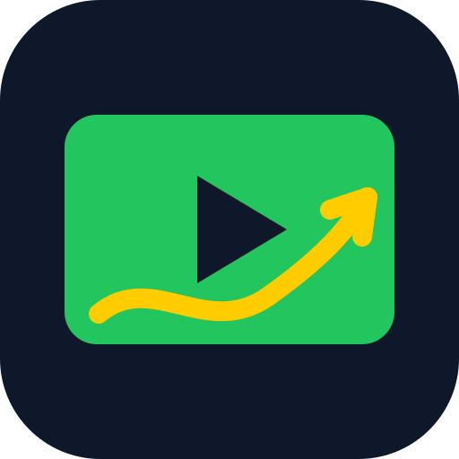

Analyse Vidéo
Installer l'app
+ Nouvelle analyse vidéo
Importer une analyse (.json)
Mes analyses
Aucune analyse pour l'instant. Choisis une vidéo pour commencer.
←
📷
⇩ Exporter
Ajouter une vidéo
✋ Fais glisser la vidéo B · 2 doigts pour zoomer
🎤 Écouter
🧩 Voir le schéma
0:00.00
0:00
⏮︎ 1 img
▶︎
1 img ⏭︎
Vitesse
0.1×
¼×
½×
1×
1.5×
2×
4×
Boucle A-B
[A
B]
🐢 Début du ralenti
0.1×
¼×
½×
¾×
Comparer avec une 2ᵉ vidéo (superposition)
Choisir la vidéo B
Retirer
Transparence
Mode
Transparence
Différence
Éclaircir
Décalage B :
0.00 s
-1 s
-1 img
+1 img
+1 s
✋ Caler B à la main
Recentrer
Gauche / droite
Haut / bas
Taille B
🎤
🧩 Schéma à
Supprimer
Terminé